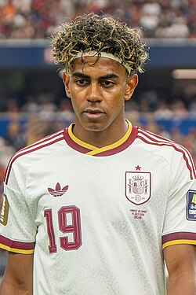

Lamine Yamal Nasraoui Ebana (Esplugas de Llobregat, Barcelona, 13 de julio de 2007) es un futbolista español que juega como extremo derecho en el F. C. Barcelona de la Primera División de España. Es internacional absoluto con la selección de España.
Criado en el barrio mataronense de Rocafonda, fue fichado para las divisiones juveniles de Barcelona y formado en La Masía. Debutó con el primer equipo en 2023 (15 años y 87 días), convirtiéndose en el jugador más joven en disputar un partido oficial con el Barcelona. Es también el futbolista más joven en marcar en la historia de El Clásico (17 años y 105 días). En su primera temporada completa, se consolidó como titular y fue reconocido como el «mejor futbolista joven del mundo» con el Trofeo Kopa otorgado por France Football y el Premio Golden Boy. En 2025 se convirtió en el único futbolista en conquistar de forma consecutiva el Trofeo Kopa, y obtuvo también el Balón de Plata como segundo mejor jugador del mundo. También fue incluido en el FIFPro World XI de 2025.

A la selección de fútbol de su país la ha representado en diversas categorías juveniles. Con 16 años y 57 días de edad, debutó con la selección absoluta, estableciendo un récord del jugador más joven en la historia de España de hacerlo así y también de marcar un gol. En 2024, representó a su país en la Eurocopa, donde España consiguió su cuarto título continental. Su actuación le valió el premio al «mejor jugador joven» del torneo. Es el jugador más joven en la Eurocopa en debutar y asistir (16 años y 338 días), además de anotar un gol (16 años y 361 días). En la Copa Mundial de Fútbol de 2026, levantó el segundo título mundial de su selección, y anotó un gol contra Arabia Saudita que lo colocó como el octavo jugador más joven en marcar un gol en una Copa Mundial de Fútbol (18 años y 343 días).